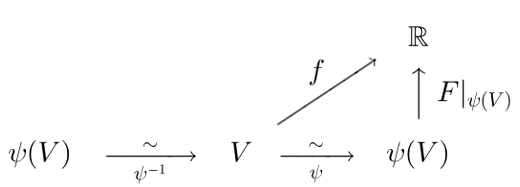

$2.4$ コンパクト台をもつ $\Coo$ 関数
以下, 整数 $n \ge 1$ を固定し, $M$ を $n$ 次元 $\Coo$ 多様体とする.
$U$ を $M$ の開集合とし, $p \in U$ とする.
このとき, $U$ 内にコンパクト台をもち, $p$ で正値をとる $M$ 上の $\Coo$ 非負関数が存在する.
(1) $(V, \, \ps)$ を $U$ に含まれる $p$ の周りの座標近傍とする. $V$ 内にコンパクト台をもち, $p$ で正値をとる $M$ 上の $\Coo$ 非負関数が存在することを言えばよい.
(2) $\ps(V)$ 内にコンパクト台をもち, $\ps(p)$ で正値をとる $\Rn$ 上の $\Coo$ 非負関数 $F$ が存在する.
$V$ 上の関数 $f$ を,
$$
f := F|_{\ps(V)} \cc \ps
$$
により定義する.
図式

は可換であるので, $f$ の $(V, \, \ps)$ での座標表示は,
$$
f \cc \psinv = F|_{\ps(V)}
$$
である.
これは $\ps(V)$ 上の $\Coo$ 関数であるので, $f$ は $V$ 上の $\Coo$ 関数である.
$f$ は非負であり, $p$ で正値をとる.
(3) $F$ の台 $\supp F \ss \ps(V)$ はコンパクトであるので, $$ K := \psinv(\supp F) \ss V $$ もコンパクトである. したがって, $K$ は $M$ の閉集合であり, $$ f|_{V \cap K^c} = 0 $$ である.
(4) $K \ss V$ より, $M = V \cup K^c$ であり, また, $V \cap K^c$ 上で $f = 0$ であるから, $$ g(q) := \bcs f(q) & (q \in V) \\ 0 & (q \in K^c) \ecs $$ により, $M$ 上の関数 $g$ が定まる. $g$ は $V$ 上でも $K^c$ 上でも $\Coo$ であるので, $M$ 上 $\Coo$ である.
(5) $\supp g \ss K \ss V$ であるので, $g$ の台はコンパクトであり, $V$ に含まれる. $g$ は非負であり, また, $p \in V$ であるので, $$ g(p) = f(p) > 0 $$ が成り立つ.